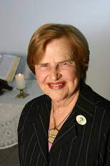

Zilda Arns (1934-2010) foi uma médica pediatra e sanitarista. Fundou em 1983 a Pastoral da Criança, um programa de ação social da Conferência Nacional dos Bispos do Brasil. Em 2006 foi indicada ao "Prêmio Nobel da Paz". Nasceu em Forquilhinha, Santa Catarina, no dia 25 de agosto de 1934. descendentes de alemães, era irmã de Dom Paulo Evaristo Arns, arcebispo emérito de São Paulo. Com 21 anos, Zilda casou-se com o marceneiro Aloysio Neumann, com quem teve seis filhos. Na juventude enfrentou a resistência paterna, estudou medicina na Universidade Federal do Paraná e especializou-se em pediatria, saúde pública e sanitária. Zilda contou ao longo de sua vida, que no primeiro semestre da faculdade, foi reprovada por um professor que dizia ser contra mulheres estudarem. Começou sua vida profissional no Hospital Pediátrico em Curitiba.
Em 1983, Zilda e Dom Geraldo Majella, arcebispo de Salvador, formularam um plano para diminuir a mortalidade infantil com o uso do soro caseiro: estava criada a Pastoral da Criança. No início era só um grupo de voluntários do Paraná. O trabalho começou na pequena cidade de Florestópolis. Zilda Arns esteve à frente da Pastoral ao longo de 25 anos. O trabalho foi fundamental para reduzir a mortalidade infantil, levando Zilda Arns a receber a indicação ao "Prêmio Nobel da Paz em 2006". Para chegar até a indicação ao Prêmio Nobel, Zilda Arns percorreu os cantos mais remotos do Brasil. O programa se expandiu e alcançou 72% do território nacional, além de vinte países da América Latina, Ásia e África. Ela mudou a vida de mulheres e crianças carentes, no Brasil e no mundo, dando esperança para aqueles que são mais vulneráveis na sociedade, sendo insparação para milhares de pessoas.
Zilda faleceu em dia 12 de janeiro de 2010 no Haiti. Ao terminar uma palestra ela permaneceu no prédio paroquial da Igreja Sacré Coeur respondendo algumas perguntas dos religiosos, foi nesse momento que aconteceu o terremoto que destroçou Porto Príncipe. O prédio de três andares virou um amontoado de pedras e vigas. Ela foi atingida na cabeça e morreu na hora, junto com outros religiosos que estavam na sala. O corpo de Zilda Arns foi levado para Curitiba, transportado em carro aberto e aplaudido por uma multidão que se despedia da missionária.
"Amar é acolher, é compreender, é fazer o outro crescer."
"Não se enganem. Uma gotinha no oceano faz, sim, muita diferença."
"As crianças, quando estão bem cuidadas, são sementes de paz e esperança.
"Não existe ser humano mais perfeito, mais justo, mais solidário e sem preconceitos que as crianças."